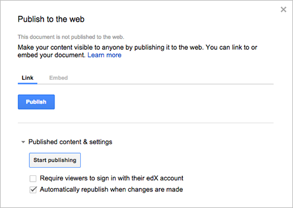
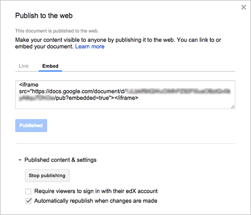

10.18. Google Drive Files Tool#
Note
EdX offers provisional support for this tool.
This topic describes how to embed Google Drive files, such as documents, spreadsheets, and images, in your course.
Before you make content from an external site available through your course, be sure to review the content to ensure that it is accessible to people with disabilities. For more information, see Accessibility Best Practices for Developing Course Content.
You can also use Google calendars in the course body. For more information, see Google Calendar Tool.
Note
Google services are not available in some regions and countries. If Google services are not available in a learner’s area, the learner might see an “image unavailable” message in the place of the Google Drive file or calendar. EdX strongly suggests that you provide alternative resources for learners in these areas.
10.18.1. Overview#
You can embed a Google Drive file in your course so that learners see the file in the course body. For example, you can share a Google spreadsheet with learners.
You can embed the following types of Google Drive files.
Google Docs (text documents)
Google Drawings (images)
Google Forms (forms or surveys)
Google Slides (presentations)
Google Sheets (spreadsheets)
10.18.2. Embedding a Google Drive File in Your Course#
To embed a Google Drive file in your course, follow these steps.
10.18.2.1. Enable the Google Drive Files Tool#
Before you can add Google Drive files to your course, you must enable the Google Drive tool in Studio or OLX (open learning XML).
To enable the Google Drive tool in Studio, you add the "google-document"
key to the Advanced Module List on the Advanced Settings page. For
more information, see Enabling Additional Exercises and Tools.
Alternatively, you can use OLX to enable the Google Drive tool.
10.18.2.1.1. Enable Google Drive Files in OLX#
To enable Google Drive files in your course, you edit the XML file that
defines the course structure. You locate the course element’s
advanced-modules attribute, and add the string google-document
to it.
For example, the following XML code enables Google Drive files in a course. It also enables Google calendars.
<course advanced_modules="["google-document",
"google-calendar"]" display_name="Sample Course"
start="2014-01-01T00:00:00Z">
...
</course>
For more information, see OLX Course Building Blocks in the EdX Open Learning XML Guide.
10.18.2.2. Publish the Google Drive File and Obtain the Embed Code#
Before you can add a Google Drive file to your course, you must publish the file to the web and obtain the embed code for the file.
Important
The task described in this section relies on the use of third-party software. Because the software is subject to change by its owner, the steps provided here are intended as guidelines and not as an exact procedure.
Open the Google Drive file.
From the File menu, select Publish to the web.
Select Publish, and then select OK to confirm the action.
Select the Embed tab.
Copy the complete string in the Embed field, including the
<iframe>tags.Note
Google images do not have an
<iframe>tag. To embed an image, you copy the completeimgtag.You use that string to configure the Google Drive file component.
10.18.2.3. Add a Google Drive File to Your Course#
To add a Google Drive file in the course body, you create an advanced component in Studio or create a Google Document XBlock in OLX.
10.18.2.3.1. Add a Google Drive File Component in edX Studio#
Ensure you enable Google Drive files before you add the component.
To add a Google Drive file component, follow these steps.
On the Course Outline page, open the unit where you want to add the Google Drive component.
Under Add New Component, select Advanced, and then select Google Document.
The new component is added to the unit, with the default Google presentation embedded.
In the new component, select Edit.
In the Display Name field, enter the name for the component.
In the Embed Code field, paste the embed code that you copied in the Obtain the Google Drive File Embed Code task.
Select Save.
You can then Previewing Draft Content to see how the unit with the Google drive file will appear to learners.
10.18.2.3.2. Add a Google Drive File XBlock in OLX#
To add a Google Drive file XBlock in OLX, you create the
google-document element. You can embed the google-document
element in the vertical element, or you can create the
google-document element as a stand-alone file that you reference
in the vertical.
For more information, see OLX Course Building Blocks in the EdX Open Learning XML Guide.
For example:
<google-document url_name="c5804436419148f68e2ee44abd396b12"
embed_code="<iframe
frameborder="0" src="https://docs.google.com/spreadsheet/pub
?key=0AuZ_5O2JZpH5dGVUVDNGUE05aTFNcEl2Z0ZuTUNmWUE&output=html&widge
t=true"></iframe>" display_name="Google Document"/>
The value of the embed_code attribute is the embed code you copied in the
Obtain the Google Drive File Embed Code task.
Note
The edX Learning Management System sets the height and width values for Google Drive files. If you add these attributes, the LMS overrides your changes.
10.18.3. Editing Google Drive Files#
When you edit and save a Google Drive file that is embedded in your course, learners see the updates immediately. You make changes to files with the Google user interface. You do not need to edit the Google Document component.